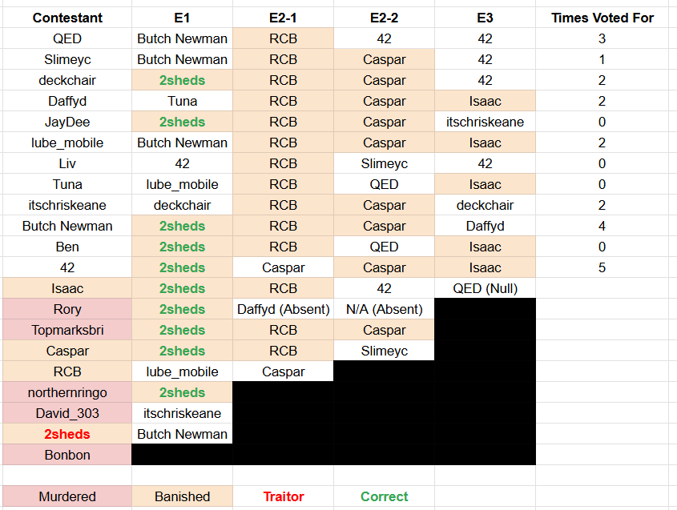
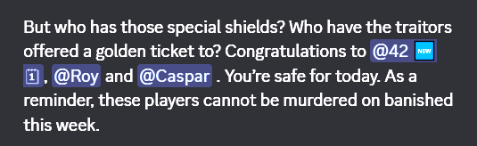
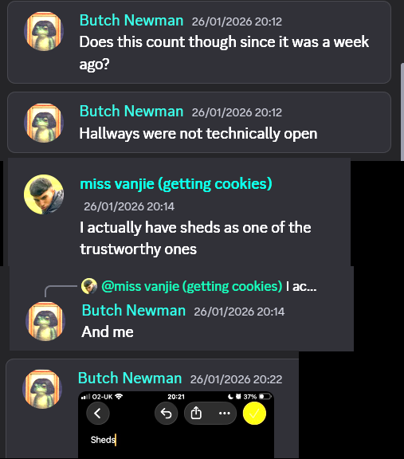
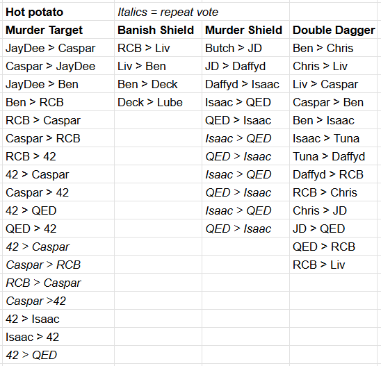
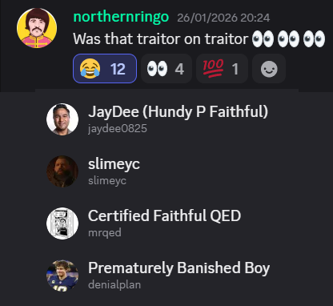
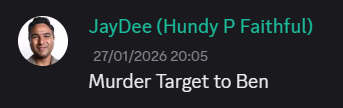
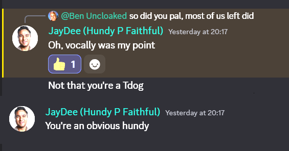
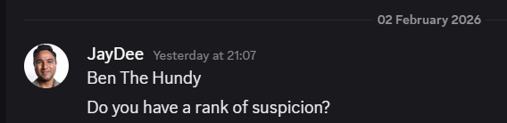

If you're reading this, I'm dead.
Hello fellow players. I'll keep these notes as brief as I can, and hopefully it will help you catch any remaining traitors. Pay close attention to patterns of behaviour in both voting and games.
These notes are taken as of the evening of February 2nd 2026 - I can't update them further, I'm dead. First, here's the voting record to date:

Mirror, mirror, on the wall, who's the sheepiest of them all? Why, it's young deckchair, being the only remaining player to always vote with the crowd every time - yes, he voted 42 rather than Isaac, but 42 only missed a tiebreak by 1 vote. Make of it what you will.
Don't forget about the banishment shields given out by traitors. These were given to Rory, Caspar, and 42 - two of whom are now banished and dead faithfuls. You may want to point fingers at 42, but think about it - if you were a traitor, wouldn't you give these out to the most chaotic people in the game? Rory, always causing chaos in the pub. Caspar, young and full of beans. 42... need I say more?

Back to game one, we all know what happened - not everybody who didn't vote for 2sheds was a traitor, obviously. But who was actively defending 2sheds at the time? Butch, who proceeded to vote for 2sheds anyway, QED, who voted for Butch, and (sort of) Tuna, who voted for Lube. Isn't it a little odd that Butch would say these things and then still vote for her anyway?

Now, let's take a look at the results of the hot potato game:

What can we ascertain from this as time's gone on? Well...
- JayDee gave faithful Ben a murder target, despite then saying I was a "hundy p faithful?" This will come up later in these notes, if it hasn't already at the round table. He also gave the target to faithful Caspar.
- Lube held onto the banishment shield for a very, very long time - although was punished for it later.
- Daffyd was giving now-confirmed faithfuls Isaac and RCB shields and daggers, which looks pretty good for Daffyd.
- QED and confirmed faithful Isaac were ping ponging a shield despite all the drama it caused and Isaac proceeding to vote for QED. Weird.
- Liv gave confirmed faithful Ben a banishment shield, albeit early in the game.
- 42, Caspar, QED and RCB were playing their own shit flinging match, with Isaac thrown in at the end. As of writing, three of these people are banished faithfuls.
So then, let's look at who's left alive as of now, and where my head's at.
JayDee - if I don't get a chance to bring this up tonight, you are my number one suspect. Why? Well, let's see. Remember this post from Ringo after I caught Sheds? Remember who was putting eyeballs on it?

Now in fairness, so was RCB, who turned out to be faithful - albeit banished for doing dodgy shit exactly like this and looking bad. But that's not the point I'm making (although remember at who else is eyeballing that post). The point is, JayDee then did this:

And then said this:

You suspected traitor-on-traitor behaviour from me, tried to give me (AND confirmed faithful Caspar) a murder target, but I'm an obvious hundy? Better yet, my DMs with JayDee didn't even commence until after night 3's round table:

Which was after i'd been left alive for someone (Liv) to ask why I'm still here, I'd defended myself, and absolutely nobody batted an eye. I think you had a plan and it failed.
Lube - the longer this game's gone on, the more I'm convinced that you're the mastermind behind the traitors. I know you, and I know you're smart enough to be making your own spreadsheets and data points and feeding them to me to look like a good faithful. You managed to quietly avoid voting sheds. You've come under very limited scrutiny and stayed alive. I can't help but think that after being banished with a full table vote in the first round of the previous game, you've been given the opportunity to take revenge, and accepted it with glee.
QED - boy, you were at the top of my list before JayDee. I already voted for you BEFORE you got two faithfuls killed - didn't vote sheds, defended her, eye react on the post above implying I'm a traitor. But after everything that's happened since... I just don't know any more. I think 42 is a faithful, albeit the worst one ever, and he's been gunning for you only to realise he's wrong. I'm just not sure now.
SlimeyC - one of the quietest players in the game. TOO quiet for my liking, considering how many of the other very quiet players have been murdered one by one. But I wonder, are you slipping under the radar as a traitor, or simply a puppet on a string?
Deckchair - as I've mentioned above, the sheep of the table - the only one left alive who voted for popular targets every time. Is that a coincidence? Are you simply unsure and observing? I can't say. But there is that whole thing about you not even getting to play a single round in the first game...
Butch - it's hard to get a read on you. The ONLY thing I have to go on is the messages regarding Sheds up top. People voting for her because of me is the only reason you made it out of week one, and since then, you've stayed under the radar. You are a true question mark.
Tuna - I wasn't sure at first, but as time's gone on, I think you've had a lot of heat with the whole returning traitor theory which I just think isn't a thing. Well, at least it wasn't
for poor Isaac. I think you've been given the chance to play this game again from a new angle and I've seen some piss poor attempts to stitch you up in the process. You're okay in my books.
Daffyd - lovely lovely Dave. So little to go on altogether, but as well as giving faithful Isaac a murder shield, you gave faithful RCB a double dagger quite later in the game - something that's either a very risky traitor play, or sign of a faithful. I choose the latter. I hope you make it.
42 - young 42. Through all the turmoil, I've never turned my back on you; I think you're a loud, chaotic, suicidal, and largely very wrong faithful - but a faithful nonetheless. I think you were given an early shield by the traitors so we'd point fingers at the chaotic one, and I can see no good reason why a traitor would go SO hard at suspects like Caspar and QED, even if you're wrong. You're on my team, or you're a dynamite traitor.
Liv - until writing this statement, and in fact, still, I have you down as my number two most trusted. You've consistently proven yourself to me through good DMs, presenting theories to the table, giving me a banishment shield, giving faithful Caspar a double vote, a solid threeway group with someone else I believe faithful... so why this sinking feeling in my chest that I've been played for a fool? I still can't really believe it would be you, but if it is, you deserve it.
Chris - my ride or die. Since the first round table you've come to me and listed your suspects and they have aligned almost exactly with mine before I've even mentioned them by name, time and again. Good theories, good DMs, active at the table; I hope you make it out of all this alive not a part of me thinks it could be you.
Well... one part does.

I truly hope I'm just being paranoid here - but I'm not sure I understand how this happened exactly. Chris wants a group chat, I say I'll make it, and in the exact same minute Liv starts it?
Is this sheer coincidence? Did Liv tell you she was going to make the chat and you didn't mention that to me?
... Did you two agree you needed a group chat with me to keep me close?
I'm not saying any of this is right. There's a list of others I'd go after before the pair of you. But halfway through the game, I need to look at every angle and consider that my enemies have been keeping me very close. Until that moment I hadn't really thought of it, but it happened, followed by a brief but stunned silence, and we all moved on. It left me reeling and I just have to consider that.
To Summarise
I don't fucking know who the traitors are. Only the traitors do. My theory is that there's three left, because this game is 25% larger than the last which had three traitors, and with so few rounds to play, recruitment nights are boring. As of right now, my best guess is that it's Lube, JayDee, and then one of QED/SlimeyC/Deckchair. The alternative is that I've been played like a fiddle by people I trust, I guess, but I don't really think that. The other alternative is that I'm wrong on both counts and it's Butch playing his own game, which would be hilarious.
I guess I'll never know. Death Is Exhausting.
Yours in life and now in death,
Ben